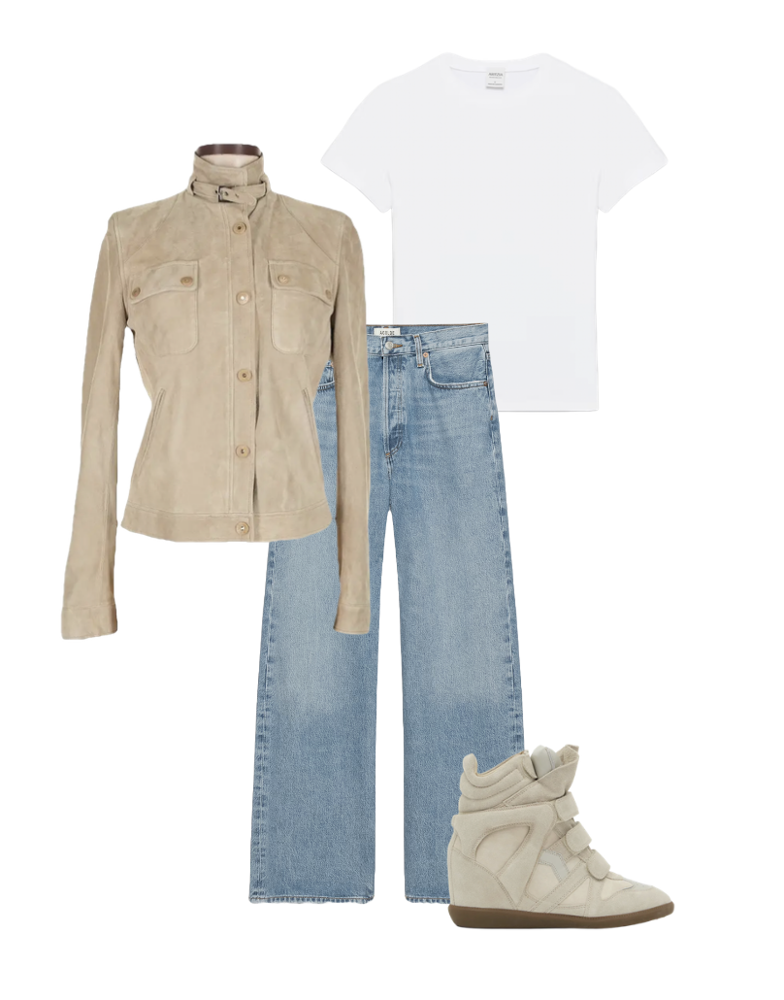
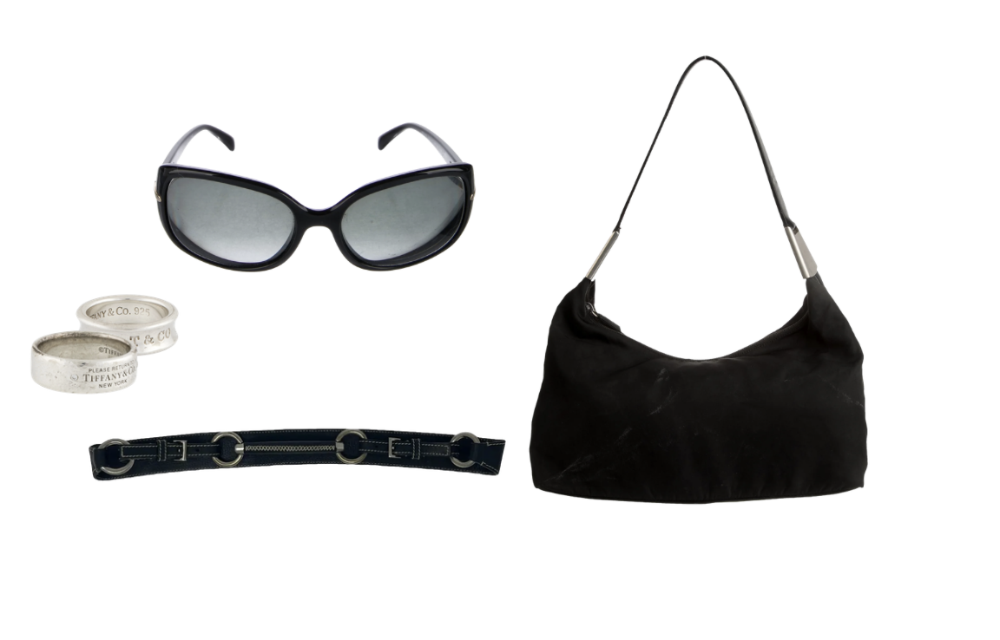
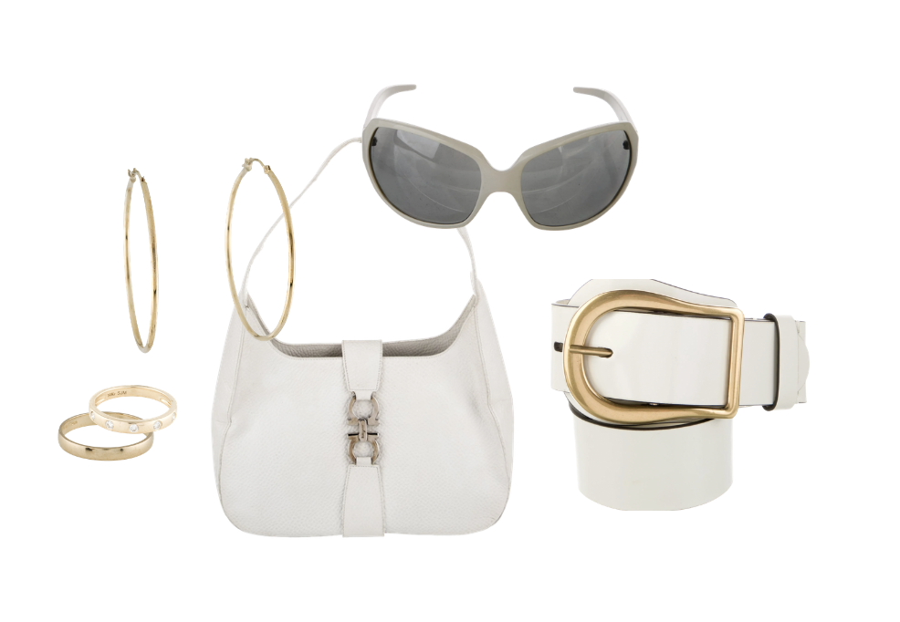

The final, and most important part are the accessories used to complete the outfit! You can accessorize in many different ways, and jewelry is a huge aspect to be eye catching.
As seen on the jacket, the metalwork is silver. Wearing silver jewelry would be the correct call. However, mixing metals is also a unique and fun way to make an outfit pop.
Other accessories that elevate an outfit could be a hat, belts, sunglasses, and bags.
Click below on a group of accessories to see your final outfit!

This choice focuses on silver details to match the jacket. The black bag, glasses, and belt all slightly contrast the lighter colors, but match as another neutral.

This choice is a bit more experimental with the mixing metals, however the bag and sunglasses match with the shirt and other neutrals making it a great choice.